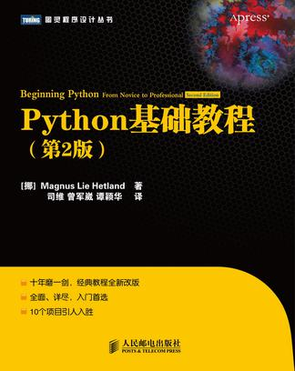

python编程
Presenter Notes
About
- 李大双
- wiki
- 山东理工大学linux小组
- 2011/12/03
Presenter Notes
The Zen of Python, by Tim Peters
>>> import this
Beautiful is better than ugly. Explicit is better than implicit. Simple is better than complex. Complex is better than complicated. Flat is better than nested. Sparse is better than dense. Readability counts. Special cases aren't special enough to break the rules. Although practicality beats purity. Errors should never pass silently. Unless explicitly silenced. In the face of ambiguity, refuse the temptation to guess. There should be one-- and preferably only one --obvious way to do it. Although that way may not be obvious at first unless you're Dutch. Now is better than never. Although never is often better than *right* now. If the implementation is hard to explain, it's a bad idea. If the implementation is easy to explain, it may be a good idea. Namespaces are one honking great idea -- let's do more of those!
Presenter Notes
About python
- 清晰，可读
- 强大的自省能力
- 直观的面向对象
- 模块化设计
- 基于异常的错误处理
- 动态数据类型
- 广泛的库
- 可以容易的使用c/c++/java写扩展模块
Presenter Notes
解释器
Python 2.7.2+ (default, Oct 4 2011, 20:03:08) [GCC 4.6.1] on linux2 Type "help", "copyright", "credits" or "license" for more information. >>> 3 + 2 5
Presenter Notes
注释
# 打印hello world print "hello world"
Presenter Notes
python类型层次

Presenter Notes
数字
>>> 3+2 5 >>> 2**100 #2 的100 次方 1267650600228229401496703205376L # L表示长整形 >>>3//2 #双斜线表示整除 >>>1 >>> a=1.5+0.5j >>> a.real 1.5 >>> a.imag 0.5
Presenter Notes
变量
>>> x = 3 >>> x 3
>>> a,b = 1,2 >>> a 1 >>> b 2 >>> b,a = a,b >>> a 2 >>> b 1
Presenter Notes
字符串
>>> 'spam eggs' 'spam eggs' >>> 'doesn\'t' "doesn't" >>> "doesn't" "doesn't" >>> '"Yes," he said.' '"Yes," he said.' >>> "\"Yes,\" he said." '"Yes," he said.' >>> '"Isn\'t," she said.' '"Isn\'t," she said.'
- 长字符串
print """ Usage: thingy [OPTIONS] -h Display this usage message -H hostname Hostname to connect to """
Presenter Notes
字符串处理
>>> "hello "+"world" 'hello world' >>> print "hello"+2 Traceback (most recent call last): File "<stdin>", line 1, in <module> TypeError: cannot concatenate 'str' and 'int' objects >>> print "hello"+str(2) hello2 >>> print "hello"+repr(2) hello2
- str函数，将值转换成合理形式的字符串
- repr 创建字符串，以合法的python表达式形式来表示值
Presenter Notes
获取用户输入input(), raw_input()
name = raw_input("whai is your name:") print name
Presenter Notes
列表
>>> a_list = ['a', 'b', 'mpilgrim', 'z', 'example'] >>> a_list ['a', 'b', 'mpilgrim', 'z', 'example'] >>> a_list[0] 'a' >>> a_list[4] 'example' >>> a_list[-1] 'example'
Presenter Notes
列表切片
>>> a_list ['a', 'b', 'mpilgrim', 'z', 'example'] >>> a_list[1:3] ['b', 'mpilgrim'] >>> a_list[1:-1] ['b', 'mpilgrim', 'z'] >>> a_list[0:3] ['a', 'b', 'mpilgrim'] >>> a_list[:3] ['a', 'b', 'mpilgrim'] >>> a_list[3:] ['z', 'example'] >>> a_list[:] ['a', 'b', 'mpilgrim', 'z', 'example']
Presenter Notes
列表操作
>>> a = [66.25, 333, 333, 1, 1234.5] >>> print a.count(333), a.count(66.25), a.count('x') 2 1 0 >>> a.insert(2, -1) >>> a.append(333) >>> a [66.25, 333, -1, 333, 1, 1234.5, 333] >>> a.index(333) 1 >>> a.remove(333) >>> a [66.25, -1, 333, 1, 1234.5, 333] >>> a.reverse() >>> a [333, 1234.5, 1, 333, -1, 66.25] >>> a.sort() >>> a [-1, 1, 66.25, 333, 333, 1234.5]
Presenter Notes
元组
>>> t = 12345, 54321, 'hello!' >>> t[0] 12345 >>> t (12345, 54321, 'hello!') >>> # Tuples may be nested: ... u = t, (1, 2, 3, 4, 5) >>> u ((12345, 54321, 'hello!'), (1, 2, 3, 4, 5))
>>> empty = () >>> singleton = 'hello', # <-- note trailing comma >>> len(empty) 0 >>> len(singleton) 1 >>> singleton ('hello',)
Presenter Notes
字典
>>> tel = {'jack': 4098, 'sape': 4139} >>> tel['guido'] = 4127 >>> tel {'sape': 4139, 'guido': 4127, 'jack': 4098} >>> tel['jack'] 4098 >>> del tel['sape'] >>> tel['irv'] = 4127 >>> tel {'guido': 4127, 'irv': 4127, 'jack': 4098} >>> tel.keys() ['guido', 'irv', 'jack'] >>> 'guido' in tel True
Presenter Notes
集合
>>> basket = ['apple', 'orange', 'apple', 'pear', 'orange', 'banana'] >>> fruit = set(basket) # create a set without duplicates >>> fruit set(['orange', 'pear', 'apple', 'banana']) >>> 'orange' in fruit # fast membership testing True >>> 'crabgrass' in fruit False >>> # Demonstrate set operations on unique letters from two words ... >>> a = set('abracadabra') >>> b = set('alacazam') >>> a # unique letters in a set(['a', 'r', 'b', 'c', 'd']) >>> a - b # letters in a but not in b set(['r', 'd', 'b']) >>> a | b # letters in either a or b set(['a', 'c', 'r', 'd', 'b', 'm', 'z', 'l']) >>> a & b # letters in both a and b set(['a', 'c']) >>> a ^ b # letters in a or b but not both set(['r', 'd', 'b', 'm', 'z', 'l'])
Presenter Notes
while
>>> # Fibonacci series: ... # the sum of two elements defines the next ... a, b = 0, 1 >>> while b < 10: ... print b ... a, b = b, a+b ... 1 1 2 3 5 8
Presenter Notes
if else elif
>>> x = int(raw_input("Please enter an integer: ")) Please enter an integer: 42 >>> if x < 0: ... x = 0 ... print 'Negative changed to zero' ... elif x == 0: ... print 'Zero' ... elif x == 1: ... print 'Single' ... else: ... print 'More' ... More
Presenter Notes
for
>>> # Measure some strings: ... a = ['cat', 'window', 'defenestrate'] >>> for x in a: ... print x, len(x) ... cat 3 window 6 defenestrate 12
Presenter Notes
Looping Techniques
>>> knights = {'gallahad': 'the pure', 'robin': 'the brave'} >>> for k, v in knights.iteritems(): ... print k, v ... gallahad the pure robin the brave
break continue
>>> for n in range(2, 10): ... for x in range(2, n): ... if n % x == 0: ... print n, 'equals', x, '*', n/x ... break ... else: ... # loop fell through without finding a factor ... print n, 'is a prime number' ... 2 is a prime number 3 is a prime number 4 equals 2 * 2 5 is a prime number 6 equals 2 * 3 7 is a prime number 8 equals 2 * 4 9 equals 3 * 3
Presenter Notes
pass
>>> while True: ... pass # Busy-wait for keyboard interrupt (Ctrl+C) ...
Presenter Notes
函数
>>> def fib(n): # write Fibonacci series up to n ... """Print a Fibonacci series up to n.""" ... a, b = 0, 1 ... while a < n: ... print a, ... a, b = b, a+b ... >>> # Now call the function we just defined: ... fib(2000) 0 1 1 2 3 5 8 13 21 34 55 89 144 233 377 610 987 1597
Presenter Notes
函数参数
def ask_ok(prompt, retries=4, complaint='Yes or no, please!'): while True: ok = raw_input(prompt) if ok in ('y', 'ye', 'yes'): return True if ok in ('n', 'no', 'nop', 'nope'): return False retries = retries - 1 if retries < 0: raise IOError('refusenik user') print complaint
Presenter Notes
lambda
>>> def make_incrementor(n): ... return lambda x: x + n ... >>> f = make_incrementor(42) >>> f(0) 42 >>> f(1) 43
Presenter Notes
文档字符串
>>> def my_function(): ... """Do nothing, but document it. ... ... No, really, it doesn't do anything. ... """ ... pass ... >>> print my_function.__doc__ Do nothing, but document it. No, really, it doesn't do anything.
Presenter Notes
模块
# Fibonacci numbers module def fib(n): # write Fibonacci series up to n a, b = 0, 1 while b < n: print b, a, b = b, a+b def fib2(n): # return Fibonacci series up to n result = [] a, b = 0, 1 while b < n: result.append(b) a, b = b, a+b return result
>>> import fibo >>> fibo.fib(1000) 1 1 2 3 5 8 13 21 34 55 89 144 233 377 610 987 >>> fibo.fib2(100) [1, 1, 2, 3, 5, 8, 13, 21, 34, 55, 89] >>> fibo.__name__ 'fibo'
Presenter Notes
模块导入
>>> from fibo import fib, fib2
>>> from fibo import *
Presenter Notes
异常处理
>>> while True: ... try: ... x = int(raw_input("Please enter a number: ")) ... break ... except ValueError: ... print "Oops! That was no valid number. Try again..." ...
... except (RuntimeError, TypeError, NameError): ... pass
Presenter Notes
异常其它写法
try: except Exception, e: raise e else: pass
try: except Exception, e: raise e finally: pass
try: except Exception, e: raise e else: pass finally: pass
Presenter Notes
class
class MyClass: """A simple example class""" i = 12345 def f(self): return 'hello world' x = MyClass()
>>> class Complex: ... def __init__(self, realpart, imagpart): ... self.r = realpart ... self.i = imagpart ... >>> x = Complex(3.0, -4.5) >>> x.r, x.i (3.0, -4.5)
Presenter Notes
其它
入门图书
